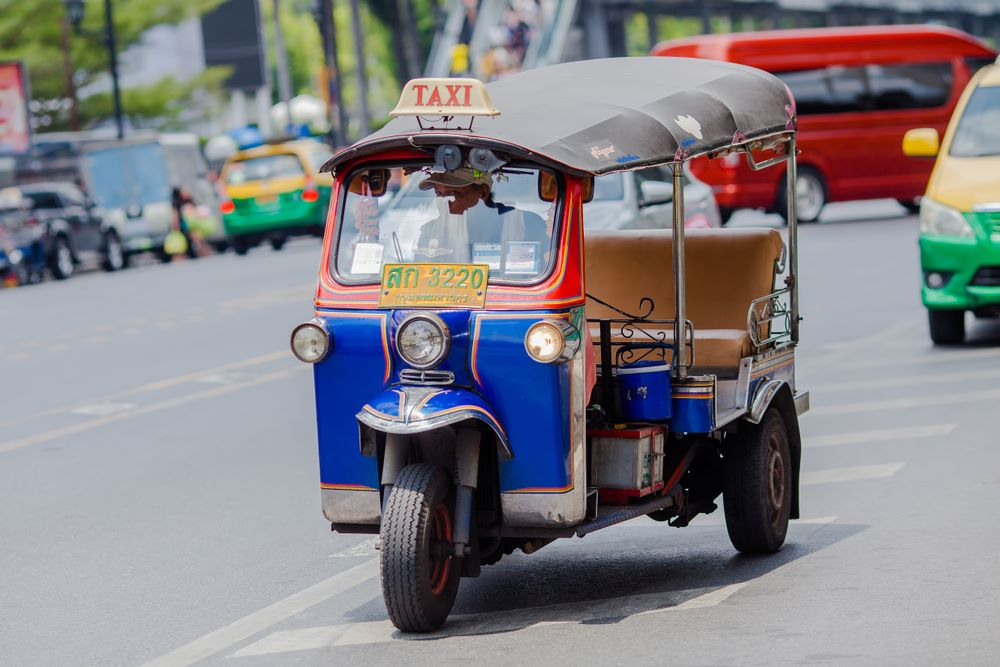

Tuk Tuk Car

Thailand has many different modes of transport which tend to come in all different shapes and sizes. These shapes and sizes are often quite different in the smaller towns and cities compared to that of Bangkok. Bangkok in actual fact has everything when it comes to transport and a great variety of the different modes of transport to meet everyone needs.
This transport guide covers everything from Songthaews and motorcycle taxis to the Bangkok BTS Skytrain and world-renowned Tuk Tuks. This is your easy guide to transport in Thailand.